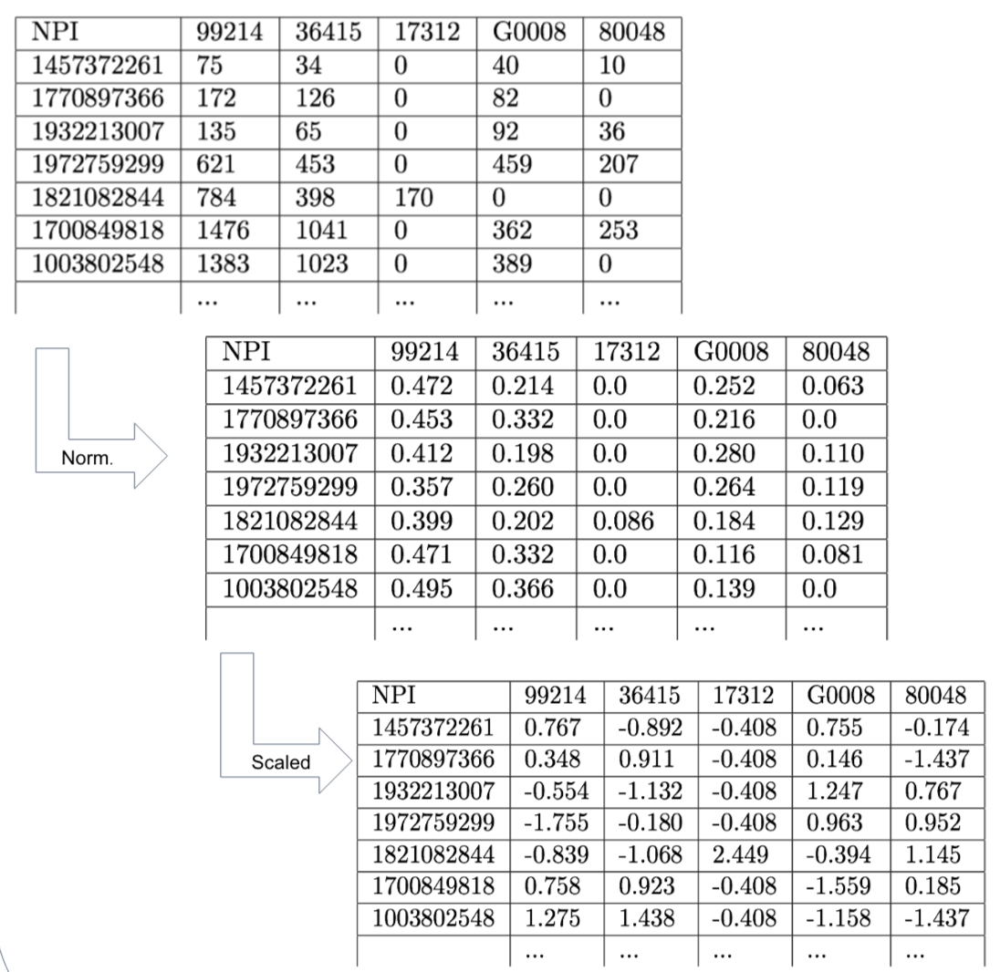

The 2014 Medicare Billing Data
This dataset contains 28 fields, which include Doctor NPI's, Doctor classification, HCPCS codes and procedure counts. This data holds records for 938,146 doctors, with 91 different classifications and 5,972 HCPCS codes.
Data Normalization and Scaling
We normalized the data for each doctor in order to use the percent of total billed procedures instead of the procedure count. This was done so that the quantity of patients did not affect our clustering. We then applied a non-linear scaling function to each attribute to produce a normalized distribution of the data, so that doctors would be more spaced out, making clustering a simpler task.
We ran the algorithm with 25 clusters, and found one cluster with 93% of the doctors, and another cluster with 6.8%of the doctors. The rest of the clusters had a total of 95 doctors.
Future Work
We would like to find the proper k to use on Internal Medicine, so that we can properly classify these doctors. In addition, we still have 90 other types of doctors to analyze. On top of this, finding a solid way of finding out what the misclassified doctors truly are is a step we must take in the future. We would also like to find new techniques of reducing dimensions, such as folding, instead of using standard deviation.